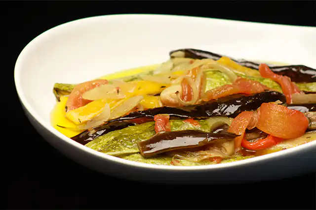

Ratatouille
ingredientes:
- 2 berinjelas
- 1 abobrinha italiana
- 1 pimentão vermelho
- 1 pimentão amarelo
- 2 tomates
- 1 cebola
- 3 dentes de alho
- 1 xícara (chá) de azeite
- 1/4 de xícara (chá) de vinagre de vinho tinto
- 2 ramos de tomilho
- sal e pimenta-do-reino moída na hora a gosto
Modo De Preparo:
- Preaqueça o forno a 180 ºC (temperatura média).
- Lave e seque as berinjelas, a abobrinha e os pimentões. Sobre a tábua, corte os legumes ao meio, no sentido do comprimento. As metade da berinjela, corte em 3 tiras (sempre no sentido do comprimento); as metades da abobrinha, em 2 tiras; dos pimentões, primeiro retire todas as sementes e, em seguida, corte cada metade em 5 tiras.
- Descasque os tomates (como se fosse descascar uma maçã), corte cada um ao meio e cada metade em 4 meias-luas - descarte as sementes. Descasque e corte a cebola em meias-luas grossas. Descasque os dentes de alho.
- Numa travessa refratária, disponha todos os legumes e os ramos de tomilho. Regue com o azeite e o vinagre. Tempere com sal e pimenta-do-reino. Misture delicadamente.
- Cubra com papel-alumínio e leve ao para assar por 2 horas. Retire do forno, deixe esfriar por 30 minutos e leve à geladeira por no mínimo 2 horas, se quiser servir a ratatouille gelada. Caso contrário, sirva a seguir.